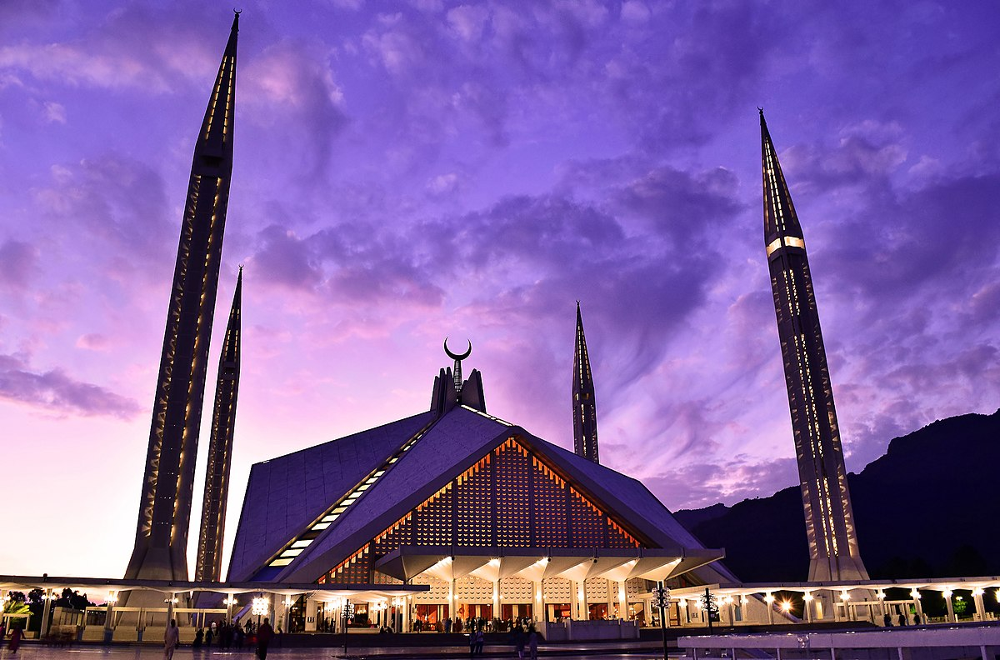
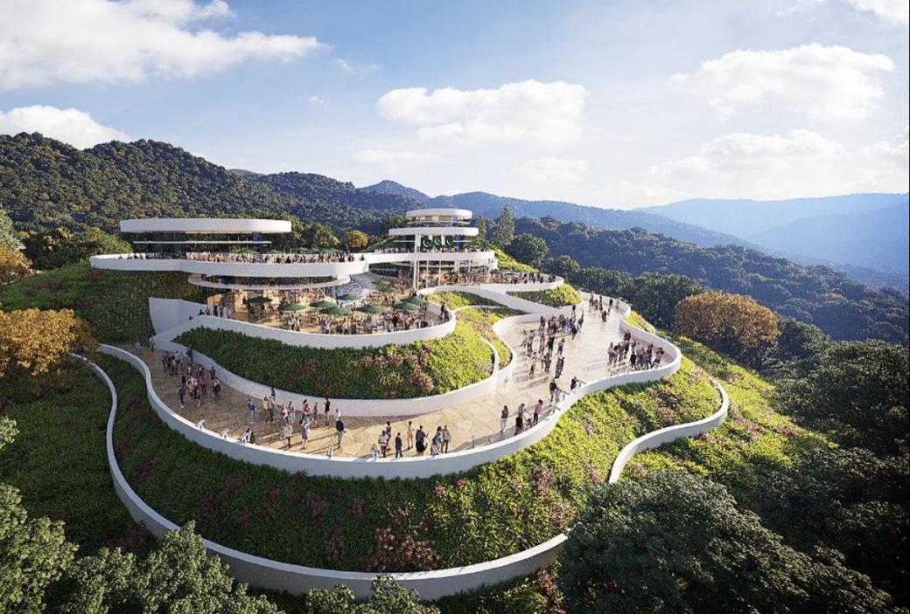
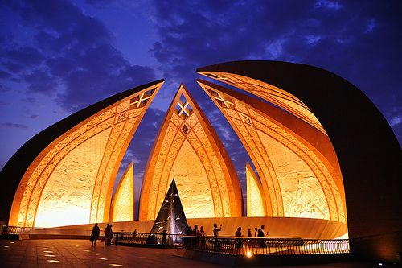

Исламабад — сердце Пакистана
Откройте для себя современную столицу Пакистана — город с великолепной природой, мечетями, музеями и горами на горизонте.



Популярные места
- Мечеть Фейсала: Одна из крупнейших мечетей Южной Азии.
- Пакистанский монумент: Национальный символ в форме лепестков.
- Маргала Хиллс: Горы с пешеходными маршрутами и обзорными площадками.
- Даман-э-Кох: Смотровая площадка с видом на город.
Туристические маршруты
🕌 Исламабад за 1 день
Посещение мечети Фейсала, Пакистанского монумента, музея Лок Вирса и обзорной площадки.
Цена: от 11000 ₸
🌄 Природа и история (2 дня)
Пешие маршруты в горах Маргала, экскурсия по деревне Сайедпур и вечерний ужин с видом на город.
Цена: от 20000 ₸
🏨 Исламабад люкс (3 дня)
Проживание в Serena Hotel, культурные туры, шоппинг, традиционные ужины и SPA.
Цена: от 42000 ₸
Лучшие отели Исламабада
- Serena Hotel: 5★ отель с садом, SPA и панорамными видами.
- Islamabad Marriott: Комфорт и бизнес-сервис в центре города.
- Hotel One Super: Бюджетный, чистый и удобный выбор.